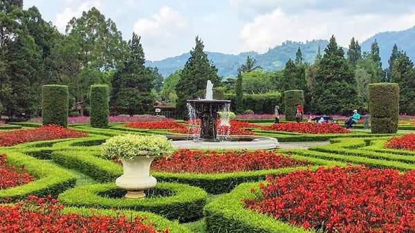

SEJARAH
Taman Bunga Nusantara sudah berdiri sejak 1995. Berawal dari terpilihnya Ibu Dani Bustanil Arifin sebagai ketua Yayasan Bunga Nusantara pada 1992. Beliau kemudian membangun taman ini, dengan tujuan membuatnya menjadi area agrowisata,
Taman Bunga Nusantara sudah berdiri sejak 1995. Berawal dari terpilihnya Ibu Dani Bustanil Arifin sebagai ketua Yayasan Bunga Nusantara pada 1992. Beliau kemudian membangun taman ini, dengan tujuan membuatnya menjadi area agrowisata,
Geografis. Taman Bunga Nusantara terletak di ketinggian 750 meter di atas permukaan laut, dengan suhu rata-rata harian 200 Ckeindahan-taman-bunga-nusantara.jpg s.d 260 C dan curah hujan mencapai 2.475,7 mm.
Taman bunga nusantara merupakan lokasi wisata favorit bagi penggemar bunga. Objek utama dari wisata ini adalah hamparan bunga berwarna-warni. Untuk menambah daya tariknya, taman bunga biasanya dilengkapi dengan bangunan dan tatanan unik seperti yang ada di Taman Bunga Nusantara. Taman yang ada di daerah Bogor ini menjadi solusi wisata bagi pendatang yang merantau ke Jakarta untuk bekerja. Selain lokasinya dekat, pemandangan yang ditawarkan di dalamnya juga tidak mengecewakan.